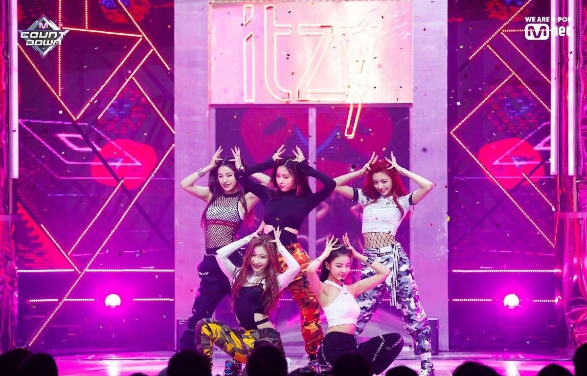
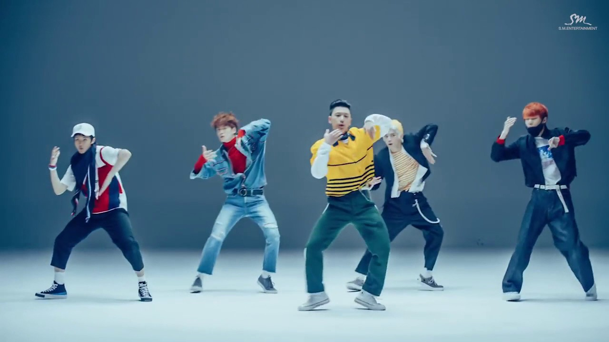

Topics
Helpful Guide To
Kpop
A beginner's guide to kpop
New to Kpop? What to know what Kpop is? What it entails? How long do the members train before debut? What are groups and subunits? What are the rules of being under an entertainment for example is dating against the rules? Here’s a beginner’s guide for everything you need to know about Kpop!
  Next
Next